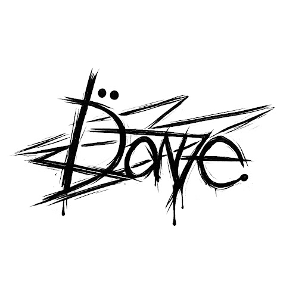

I specialize in creating clean, minimal web layouts that prioritize the user's experience. My services include Semantic HTML structuring CSS layout optimization using Flexbox, and ensuring color accessibility for all viewers. By maintaining a proportional and balanced design, I ensure that information stands out without overwhelming the eyes during the viewing process.